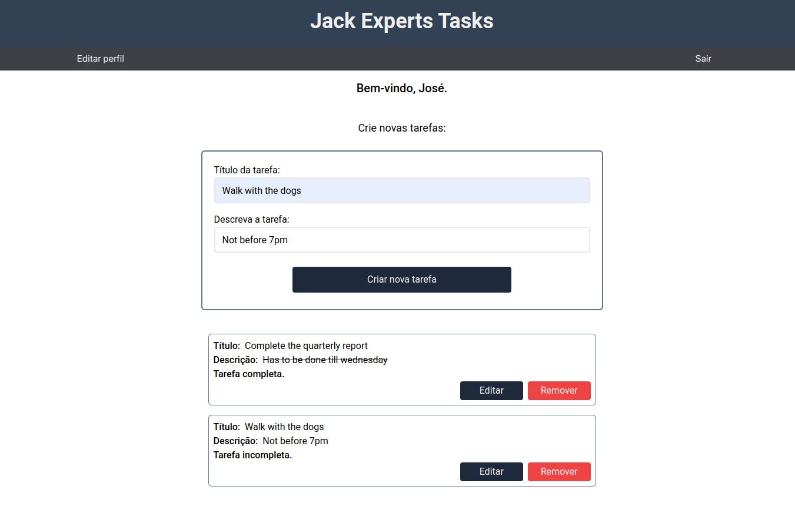
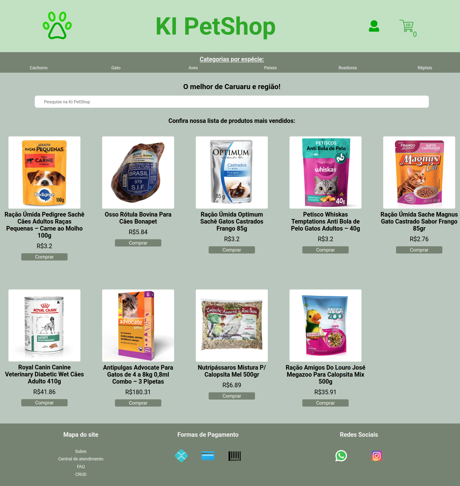
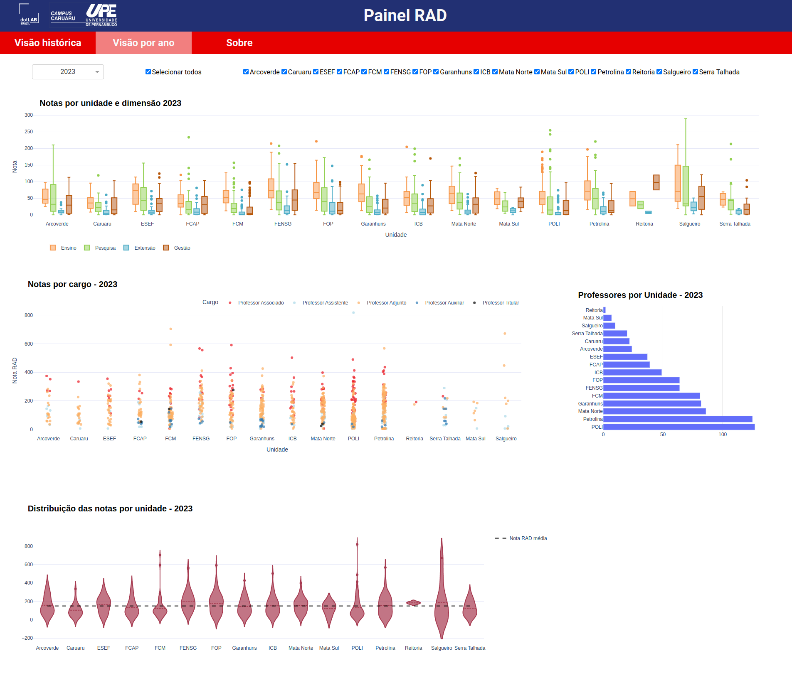
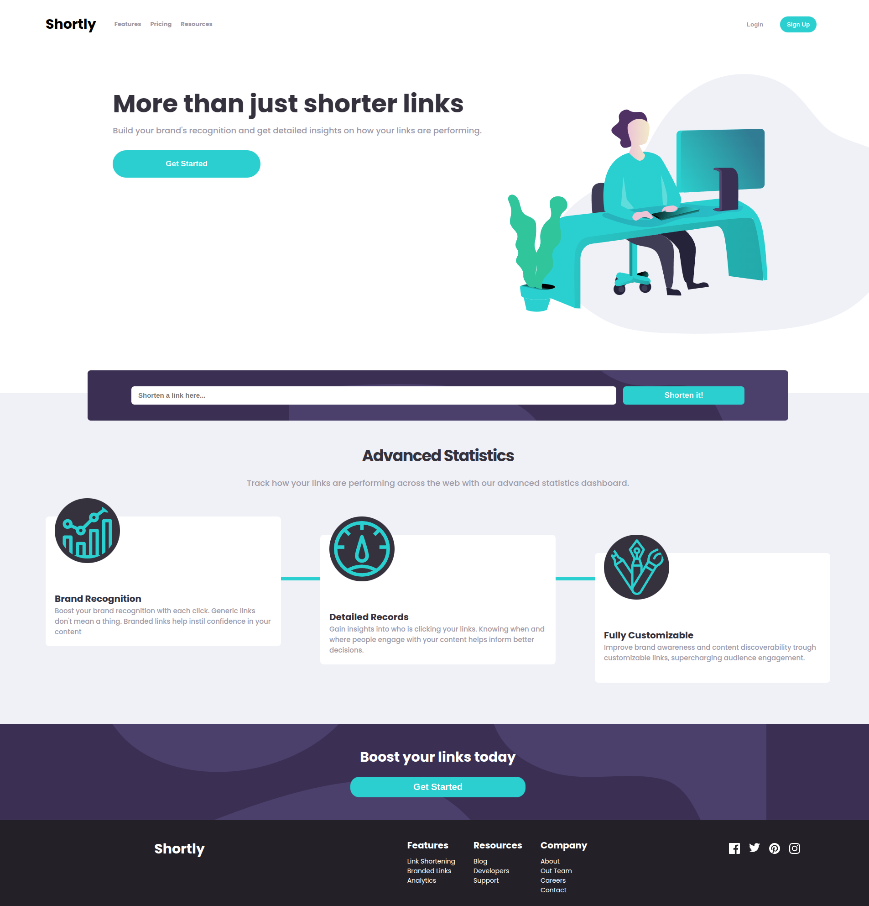
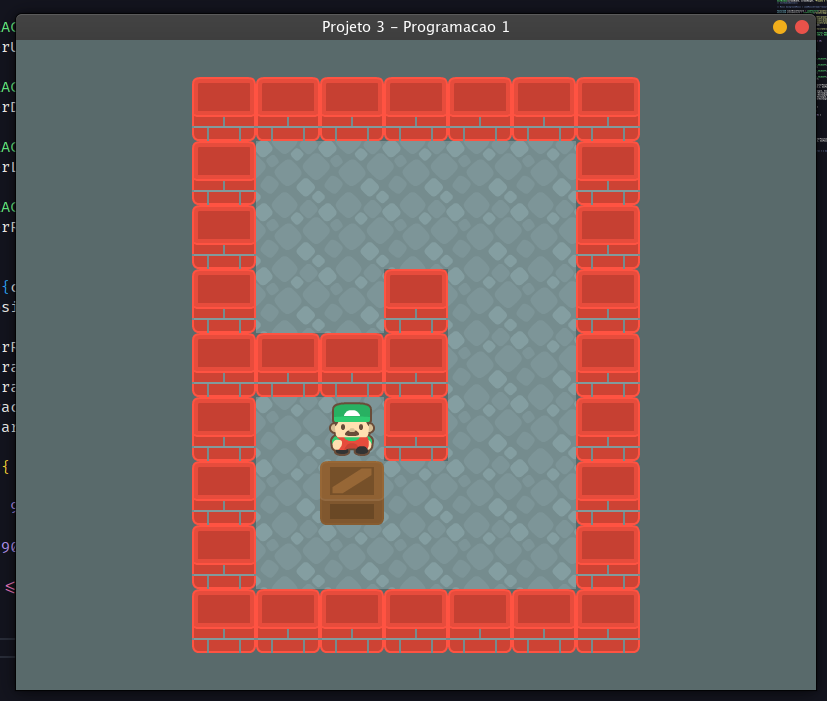

Olá, eu sou Igor, Desenvolvedor Web
Desenvolvedor em formação com experiência prática em HTML, CSS, JavaScript, Typescript, React.js e integração com APIs RESTful. Familiaridade com ferramentas como Git e Tailwind CSS. Proativo e com foco em resolução de problemas, busco contribuir para o sucesso de projetos enquanto continuo evoluindo como profissional.
Baixar CVProjetos em destaque
-

To-Do List
Landing PageNo desenvolvimento do projeto, utilizei React com TypeScript no Front-End e Node.js com TypeScript no Back-End. A API foi implementada com autenticação de usuário utilizando JWT para garantir a segurança das rotas. Para a estilização da interface, adotei o Tailwind CSS. No Back-End, utilizei o Prisma como ORM para facilitar a interação com o banco de dados relacional MySQL. Todo o ambiente de banco de dados foi gerenciado em um container Docker.
Link do repositório -

Pet-shop Landing Page
Landing PagePara este projeto, utilizei React com TypeScript para construir o Front-End e Node.js com TypeScript no Back-End. Para a estilização, optei pelo uso de CSS Vanilla. Além disso, desenvolvi uma versão alternativa da interface utilizando Vue.js como framework Front-End. Este projeto foi desenvolvido como parte da disciplina Programação IV da Universidade de Pernambuco.
Link do repositório — versão em React.js Link do repositório — versão alternativa do Front-End em Vue.js -

Iniciação Científica
DashboardDesenvolvi um Dashboard para auxiliar na tomada de decisões com base em KPIs (Indicadores-Chave de Desempenho) relacionados aos docentes da Universidade de Pernambuco. Para a visualização dos dados, utilizei a biblioteca Plotly do Python, que permite a criação de gráficos interativos e dinâmicos. Por fim, realizei o deploy do Dashboard na plataforma cloud Amazon AWS.
Link do repositório -

URL Shortening
Landing PageNeste projeto, desenvolvi a interface utilizando React.js para consumir uma API RESTful de encurtamento de links. A aplicação permite que os usuários insiram URLs e recebam links encurtados de forma eficiente. Por fim, realizei o deploy da aplicação na plataforma Vercel.
Link do repositório -

Sokoban
Desktop GameUtilizei a biblioteca RayLib da linguagem C para refazer a segunda fase do jogo puzzle Sokoban. Este projeto foi desenvolvido como parte da disciplina Programação 1 do curso de Sistemas de Informação da Universidade de Pernambuco.
Link do repositório